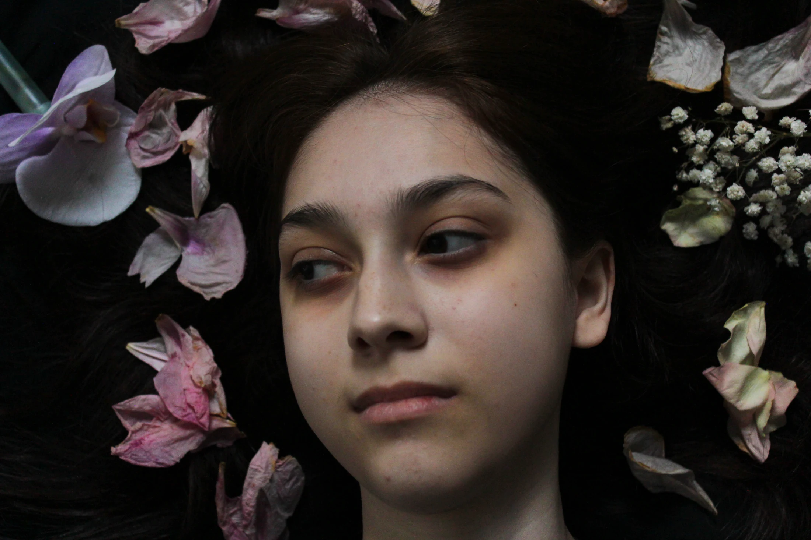
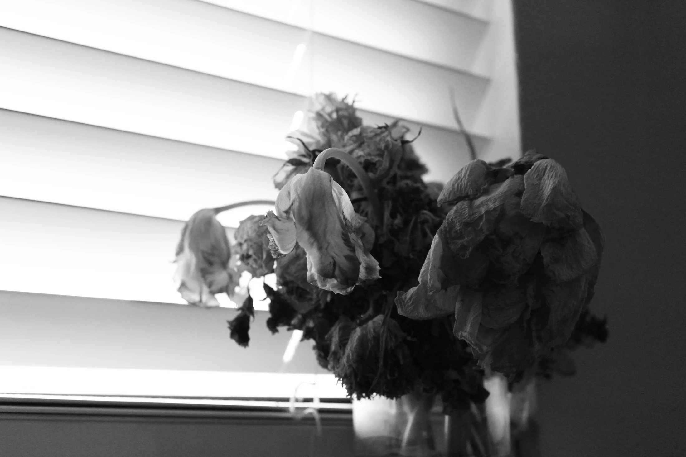
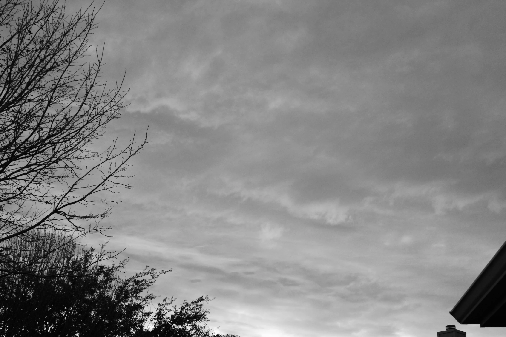

03 / observation
Move to change the odds · click to set it in motionChance
The instant before everything changes.

A quiet place holding its breath.
The instant before everything changes.
Drag across the image to move between bloom and memory.


Ordinary things become evidence
when you give them time.